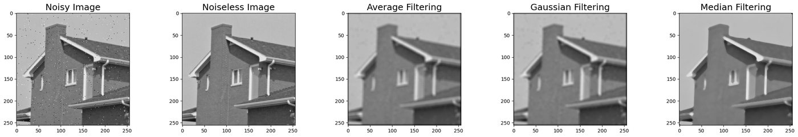
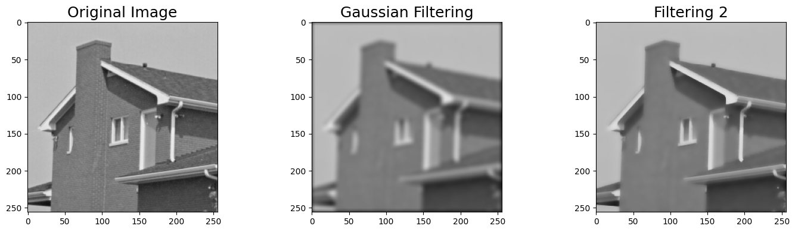
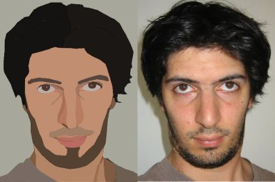
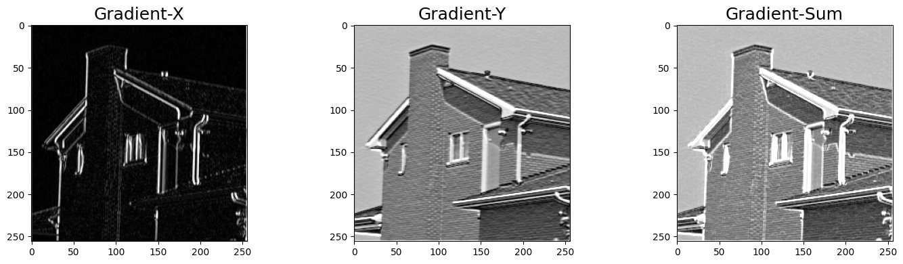
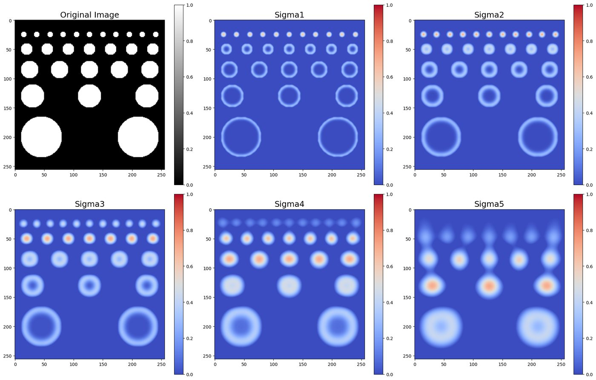

Writing 2D convolution from scratch
Zero-pad the image on all sides so the output matches the input size, flip the kernel (true convolution rather than correlation), then slide it across every pixel taking the elementwise product-sum. This one function underpins every filter used afterward — blurring, denoising, edges, and blobs are all just different kernels run through the same convolution.
Blurring and denoising: averaging vs. Gaussian vs. median
Built a Gaussian filter directly from the 2D Gaussian formula, and confirmed the expected behavior: larger kernel size and larger σ both increase blur, since both mean more neighboring pixels are being averaged together with more equal weight.

Comparing three denoising filters on a noisy image by relative L1 distance from the clean original:
- Average filter: 0.0653
- Gaussian filter: 0.0600
- Median filter: 0.0333 (best)
Median filtering won on both the error metric and visual edge preservation — averaging and Gaussian filtering blur across edges because they mix pixel values from both sides of a boundary, while the median is far less swayed by the handful of extreme (noisy) pixels in a neighborhood. The median filter itself is a straightforward sliding-window operation:
def median_filtering(image: np.array, kernel_size: int = None):
H, W = image.shape
k = kernel_size
pad = k // 2
padded = np.zeros((H + 2*pad, W + 2*pad))
padded[pad:pad+H, pad:pad+W] = image
output = np.zeros_like(image)
for i in range(H):
for j in range(W):
region = padded[i:i+k, j:j+k]
output[i, j] = np.median(region)
return outputA Gaussian filter is fundamentally a low-pass filter: it keeps low frequencies and suppresses high ones. Edges are high-frequency content, so a Gaussian filter can't tell the difference between an edge and noise — it smooths both. A bilateral filter fixes this by adding a second weighting term based on intensity difference, so pixels across a sharp edge (very different intensity) barely influence each other even if they're spatially close.

def bilateral_filter(image: np.array, kernel: np.array = None,
sigma_int: float = None, norm_fac: float = None):
H, W = image.shape
k = kernel.shape[0]
pad = k // 2
padded = np.zeros((H + 2*pad, W + 2*pad))
padded[pad:pad+H, pad:pad+W] = image
output = np.zeros_like(image)
for i in range(H):
for j in range(W):
region = padded[i:i+k, j:j+k]
center = padded[i+pad, j+pad]
# intensity Gaussian
intensity_weights = np.exp(-((region - center)**2) / (2 * sigma_int**2))
weights = kernel * intensity_weights
output[i, j] = np.sum(weights * region) / np.sum(weights)
return outputChaining edge enhancement, bilateral smoothing, and median denoising turns a photo into a flat-color, clean-edged "cartoon":

Computing image gradients for edge detection
Horizontal and vertical gradient filters (Sobel-style) give Gx and Gy at every pixel; the gradient direction is then just θ = arctan(Gy / Gx). Both gradient kernels are separable — each factors into the outer product of a 1D smoothing filter and a 1D derivative filter, which is why real implementations apply two small 1D convolutions instead of one 2D one.

A higher-order edge and blob-detection filter, derived from Taylor series
The standard central-difference edge filter only looks at a pixel's immediate neighbors. Expanding f(x±h) and f(x±2h) in a Taylor series and solving the resulting system gives a more accurate 5-tap gradient filter, &frac1;⁄₁₂[1, −8, 0, 8, −1], and an analogous higher-order Laplacian filter, &frac1;⁄₁₂[−1, 16, −30, 16, −1].
Detecting blobs with a scale-normalized Laplacian of Gaussian
The Laplacian of a 2D Gaussian, once normalized by σ² to keep responses comparable across scales, gives a filter whose response peaks when the filter's scale matches a blob's actual size — running it across several σ values and taking the strongest response at each location detects blobs of different sizes in the same image.
def log_filter(size: int, sigma: float):
half = size // 2
x, y = np.meshgrid(np.arange(-half, half + 1), np.arange(-half, half + 1))
r2 = x**2 + y**2
exponent = np.exp(-r2 / (2 * sigma**2))
# Raw LoG (without normalization)
raw_log = (1 / (2 * np.pi * sigma**4)) * (r2 / sigma**2 - 2) * exponent
# Scale-normalized LoG (multiply by sigma^2)
kernel = sigma**2 * raw_log
return kernel
Finding corners with the Harris detector
Compute image gradients, build the local structure tensor from their products, then score each pixel with the Harris response R = det(M) − k·trace(M)². High positive R marks a corner. To turn the raw response map into clean, non-duplicated corner detections: threshold to get candidates, sort them by response strength, then greedily keep a candidate only if it isn't too close to one already kept — non-maximum suppression, implemented from scratch rather than called from a library.
def threshold_harris_response(harris_response: np.array, threshold: float):
indices = np.argwhere(harris_response > threshold)
return indices
def sort_detections(candidate_detections: np.array, harris_response: np.array):
responses = harris_response[candidate_detections[:, 0], candidate_detections[:, 1]]
sorted_indices = np.argsort(responses)[::-1]
return candidate_detections[sorted_indices]
def local_max(sorted_detections: np.array, distance: float):
selected = []
for detection in sorted_detections:
keep = True
for corner in selected:
if np.linalg.norm(detection - corner) < distance:
keep = False
break
if keep:
selected.append(detection)
return np.array(selected)
def non_max_suppression(harris_response: np.array, distance: float, threshold: float):
candidates = threshold_harris_response(harris_response, threshold)
sorted_detections = sort_detections(candidates, harris_response)
return local_max(sorted_detections, distance)